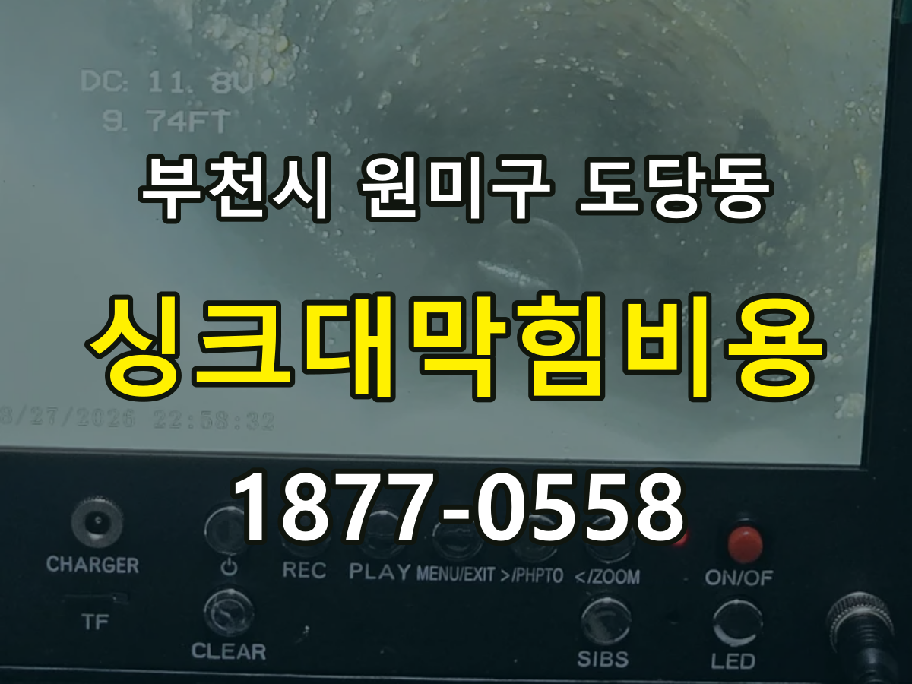
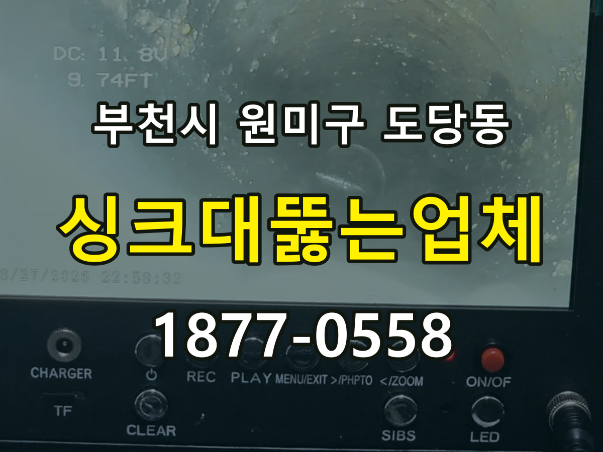

화성시 병점구 병점동 하수구막힘비용 | 식당 배수 작업의 견적 확인 항목
화성시 병점구 병점동 하수구막힘비용. 식당 트렌치에서 내시경 점검과 샤프트 작업 후 정상 통수를 확인한 실제 현장을 바탕으로 식당 배수 작업의 견적 확인 항목을 안내합니다.
경기도 FIELD NOTES
실제 출동 기록이 있는 지역을 중심으로 변기·싱크대·하수구·배관 작업 사례를 연결합니다.
화성시 병점구 병점동 하수구막힘비용. 식당 트렌치에서 내시경 점검과 샤프트 작업 후 정상 통수를 확인한 실제 현장을 바탕으로 식당 배수 작업의 견적 확인 항목을 안내합니다.

화성시 병점구 병점동 식당하수구막힘. 식당 트렌치에서 내시경 점검과 샤프트 작업 후 정상 통수를 확인한 실제 현장을 바탕으로 트렌치와 연결 배관 점검 과정을 안내합니다.

화성시 병점구 병점동 주방하수구막힘. 식당 트렌치에서 내시경 점검과 샤프트 작업 후 정상 통수를 확인한 실제 현장을 바탕으로 바닥 배수로와 연결 배관 해결 과정을 안내합니다.

화성시 병점구 병점동 하수구업체. 식당 트렌치에서 내시경 점검과 샤프트 작업 후 정상 통수를 확인한 실제 현장을 바탕으로 방문 일정·견적·통수 확인 기준을 안내합니다.

싱크대막힘비용은 막힘 위치뿐 아니라 장비가 배관에 접근할 수 있는 조건에 따라 달라집니다. 도당동 현장은 내시경 점검 후 싱크대 하부 판재에 작업용 타공으로 접근 공간을 확보하고 샤프트 작업을 진행했습니다.

싱크대뚫는업체를 알아볼 때는 장비 이름과 함께 작업 접근 방법과 완료 확인 과정을 살펴보세요. 도당동에서는 내시경으로 내부 상태를 확인하고 필요한 접근 공간을 확보한 뒤 막힌 구간을 작업했습니다.

도당동 하수구막힘 사례 중 이번 글은 싱크대와 연결된 배수관의 막힘을 다룹니다. 싱크대 물이 잘 빠지지 않았고, 내시경으로 안쪽의 심한 막힘을 확인한 뒤 샤프트로 물길을 확보했습니다.
도당동 하수구업체를 찾고 있다면 지역명과 함께 문제가 생긴 배수구와 현재 증상을 전달하세요. 이번 싱크대 현장은 내부 점검, 작업 공간 확보, 샤프트 작업, 통수 확인 순서로 진행했습니다.

화성시 병점구 병점동 하수구막힘 식당 하수구막힘 사례 트랜치에서 약 2시간 샤프트 작업을 반복하고 물을 흘려 정상 통수를 확인했습니다

부천시 원미구 도당동 싱크대막힘 사례 내시경으로 막힘을 확인하고 작업용 타공으로 접근 공간을 확보해 샤프트 작업과 통수 테스트를 마쳤습니다

용인시 처인구 원삼면 목신리 변기막힘 원삼면 목신리에서 오수를 석션한 뒤 변기를 탈거하고 추가 석션과 에어건 작업으로 통수를 회복한 사례입니다

용인시 처인구 포곡읍 전대리 변기막힘 관통기 석션 시도로 풀리지 않아 변기를 탈거하고 에어건으로 물티슈를 제거한 뒤 통수를 확인했습니다